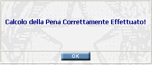

VALIDAZIONE PENA: La funzione calcola e acquisisce a sistema la pena residua da espiare nonchè la data di fine pena.
LE MASCHERE VIDEO
La funzione VALIDAZIONE PENA viene realizzata attraverso la maschera seguente nella quale compare la pena residua calcolata dal sistema che riporta, oltre l'entità della pena inflitta e di quella residua, anche la data di fine pena calcolata dal sistema. Quest'ultima viene proposta all'operatore per la validazione
COME FARE PER ...
| Per eseguire la Validazione del Fine Pena l'operatore deve confermare o modificare la data proposta e validare cliccando sul bottone |
| Per tornare ai dati del fascicolo trattato occorre cliccare sul numero di procedimento posizionato in alto nella maschera oppure sul pulsante |
CAMPI
La data di fine pena è calcolata dal sistema. L'operatore può validare quella proposta oppure modificarla con una Data Fine Pena Manuale.
| NOME | DESCRIZIONE |
| Data Fine Pena Manuale | Campo precompilato con la data di fine pena calcolata dal sistema. L'operatore deve validare tale data; ove necessario può comunque modificarla con una diversa data di fine pena manuale e validare. |
PULSANTI
Oltre ai
pulsanti orizzontali della maschera principale è presente il pulsante
 di stampa del contesto (videata)
di stampa del contesto (videata)
BOTTONI
Oltre ai comandi funzionali relativi al menù verticale sono presenti i seguenti comandi:
| COMANDI | DESCRIZIONE |
| A fronte di tale comando, il sistema acquisisce la data di fine pena validata. |
CONTROLLI
A fronte della pressione del bottone , il sistema memorizza la data validata. La data calcolata dal sistema, anche se diversa da quella validata, rimane memorizzata.
Se il sistema non riscontra incongruenze compare il messaggio:
